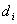
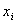
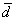
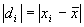
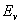
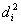
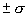
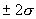
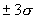
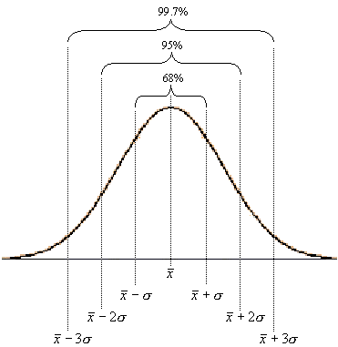

Once the mean value of the measurements is determined, it is helpful to define how much the individual measurements are scattered around about the mean. The deviation,  , of any measurement, , from the mean is given by
Since the deviation may be either positive or negative, it is often more useful to use the mean deviation, or  , to determine the uncertainty of the measurement. This is found by averaging the absolute deviations, ; that is,
It is common to report the experimental value,  , of a measurement as
where , gives the measure of the precision of the measurement. To avoid the use of absolute values we can use the square of the deviation,  , to more accurately determine the uncertainty of our measurement. The standard deviation, , (sometimes called the root-mean square) is given by
(It can be shown that for a small number of measurements, Equation 5 becomes
where N is replaced by N - 1. Your instructor may want you to use this formula instead of Equation 5.) Finally, the experimental result, , can then be written as
where , gives the measure of the precision of the measurement. Often scientists use the value of the standard deviation to serve as their data's Error bars. Notice the standard deviation is always positive and has the same units as the mean value. It can be shown that there is a 68% likelihood that an individual measurement will fall within one standard deviation (  ) of the true value. Furthermore, it can be shown that there also exists a 95% likelihood that an individual measurement will fall within two standard deviations ( ) of the true value, and a 99.7% likelihood that it will fall within ( ) of the true value.

If you have a question or comment, send an e-mail to Lab Coordinator: Jerry Hester
|
|
|
|
|
|

Copyright © 2006. Clemson University. All Rights Reserved. Photo's Courtesy Corel Draw. Last Modified on 01/27/2006 14:25:18.
|
|